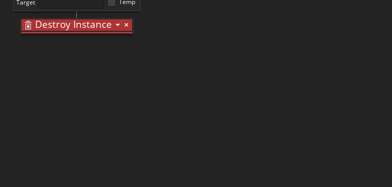

The next piece of DnD™ code required for the ball will go in a Collision Event. A collision event is triggered when the object with the event comes into collision with the instance of another object which you specify. In this case, we are going to add a collision for the ball with the brick object, so click the Add Event button now and add a Collision event with the object "obj_Brick":
And in the DnD™ editor we will add some GML code. This is because we are going to use the lengthdir_x() and lengthdir_y() functions along with move_bounce() to ensure a proper "bounce" from the brick. So add the Execute Code action with the following:
The ball will be moving at a speed of more than 1 pixel every game frame, so when a collision is detected it will probably be when the ball and the brick sprites overlap. The code above simply moves the ball back along the direction it came from until the sprites no longer overlap, and then it calls the move_bounce() to tell GameMaker Studio 2 to "bounce" the instance (GameMaker Studio 2 will do all the maths for you and set the speed and the direction of the ball as appropriate).
With that done we need to increase the speed of the ball speed - ensuring it doesn't go over a a maximum speed value - then play a sound and destroy the brick. We'll do that using the following DnD™, which you should add after the Execute Code action:
Note that we change the scope of Destroy Instance to target the "other" instance in the collision (the brick). If we don't do this, we'll destroy the ball instead. 
When a collision event is triggered it is because the sprite bounding-box of one object is overlapping the sprite bounding-box of another, which in this case means that the ball is overlapping the brick. We want to simulate a bounce off the edge of the brick, but if they are overlapping (even if it's only by a couple of pixels) then this bounce will be wrong, so what this code does is it first moves the ball back along the direction it came from until the bounding-boxes of each instance in the collision are no longer overlapping (they could be considered "touching") and then uses the a GML function to calculate the bounce direction, before destroying the brick itself and playing a sound.
Our final piece of DnD™ will go in another Collision event, this time with the Bat object. So, add a Collision event with "obj_Bat" and give it the following actions:
With these actions we are setting the direction of the ball based on how far from the center of the bat the ball hit, so in this way we are giving the player a bit of control over the direction of the bounce.
It's time now to place all this into a room and test our game!